Por Ing. Agr. Mariano González · Mat. COPAER 141995
Esta app te dice qué parte de un lote se puede aplicar y qué parte no, según las distancias que pide la Ley 11.178 de Entre Ríos a casas, escuelas, arroyos, colmenas y pueblos. Tarda 5 minutos por lote y no hace falta saber de mapas.
Las imágenes del mapa en las capturas de este manual son ilustrativas; en la app se ve la foto satelital real.
Link de la appingagrmariano.github.io/distancias-11178
En Android (Samsung, Motorola, Xiaomi…)
Abrí el link con Chrome.
Tocá los tres puntitos ⋮ arriba a la derecha.
Tocá Agregar a pantalla principal (o Instalar app) y después Agregar.
Listo: te aparece un ícono verde con círculos rojo y amarillo. De ahora en más entrá siempre desde ese ícono.
En iPhone
Abrí el link con Safari (con Chrome no se puede instalar).
Tocá el botón Compartir (el cuadrado con la flecha para arriba), abajo en el medio.
Bajá y tocá Agregar a inicio, después Agregar.
OjoLa primera vez que uses el GPS el teléfono te va a preguntar si le das permiso de ubicación. Tocá Permitir (o Mientras se usa la app). Si le decís que no, el GPS no va a andar.
Sin señal en el campoAbrí el lote en tu casa o en el pueblo, con señal, y mirá el mapa con zoom. La app guarda esas imágenes y después funciona aunque en el lote no haya señal.
Para entender todo lo demás
Qué significan los colores
La app pinta el lote como un semáforo:
Rojo · Exclusión
Acá no se aplica nada, ningún producto. Es la franja pegada a la casa, escuela o arroyo.
Amarillo · Amortiguamiento
Se puede aplicar sólo con productos banda azul o verde (clase III o IV), con el ingeniero presente y avisando 48 horas antes.
Verde · Libre
Se aplica normalmente, con la receta agronómica como siempre.
La banda de color del marbete del producto te dice la clase: roja = Ia o Ib, amarilla = II, azul = III, verde = IV.
Al abrir la app
La pantalla de inicio: Mis lotes
Cuando abrís la app ves la lista de lotes que ya cargaste. La primera vez está vacía.
Para cargar un lote nuevo tocá + Nuevo lote.
Para abrir uno que ya cargaste, tocalo en la lista.
Volver a la listaDesde cualquier pantalla, tocá el título Distancias 11.178 arriba a la izquierda.
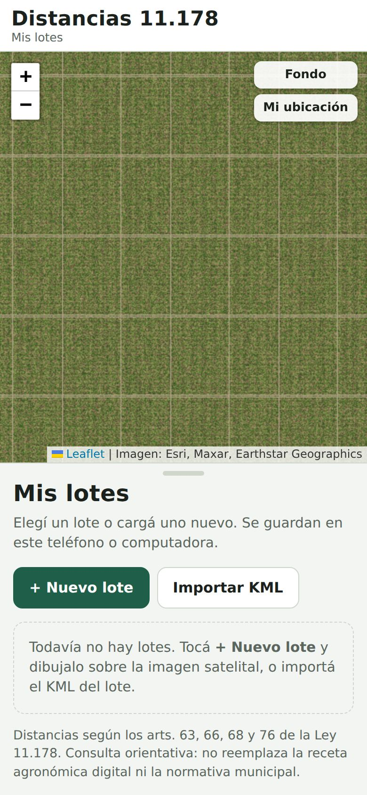
La lista vacía, la primera vez.
Paso 1 de 4
Cargar el lote
Escribí el nombre del lote y el cliente. Sirve para encontrarlo después.
Buscá el lote en el mapa. Con dos dedos acercás y alejás. Si tenés las coordenadas, tocá Ir a coordenadas, pegalas y tocá Ir.
Acercate bien hasta ver los alambrados o los caminos del lote.
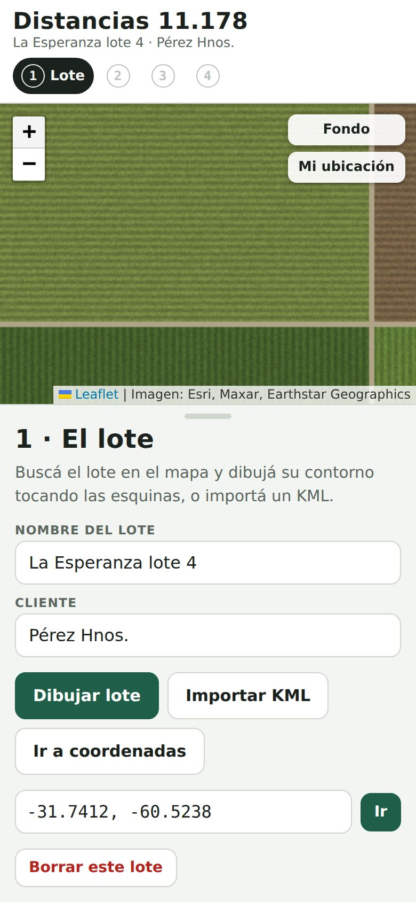
Nombre, cliente y coordenadas.
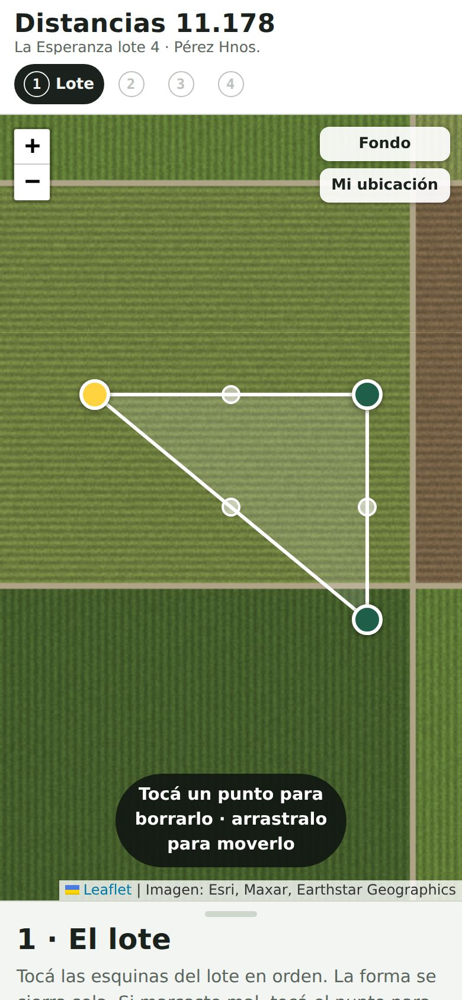
Tres esquinas: la forma ya se cierra sola.
Dibujar el contorno
Tocá Dibujar lote. El panel de abajo se achica para que veas más mapa.
Tocá cada esquina del lote, una atrás de otra, dando la vuelta en orden. El primer punto queda amarillo.
No hace falta volver al primer punto: la forma se cierra sola, uniendo el último punto con el primero.
Cuando marcaste todas las esquinas, tocá el botón verde ✓ Terminar que está abajo sobre el mapa, o tocá el punto amarillo.
Si marcaste mal un punto
Es muy fácil tocar donde no era. Se arregla así:
Para borrar un punto: tocalo. Cualquier punto menos el amarillo, que cierra la figura.
Para moverlo: mantenelo apretado y arrastralo con el dedo hasta el lugar correcto.
Para agregar un punto en el medio de un lado: tocá el circulito blanco chico que hay en la mitad de cada lado.
↶ Borrar borra el último punto que pusiste, y ✕ cancela el dibujo.
OjoAcercá bien el mapa antes de tocar. Con el mapa lejos, un dedo tapa decenas de metros.
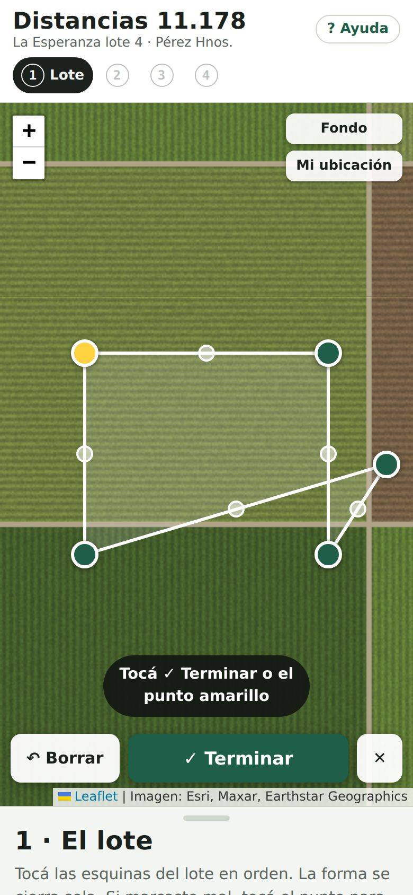
El punto de la derecha quedó mal: tocalo y se borra.
Listo el lote
Arriba te dice las hectáreas del lote. Controlá que se parezcan a las reales.
Si algo quedó mal, tocá Editar puntos para corregir sin empezar de nuevo, o Redibujar de cero.
Tocá Siguiente: áreas sensibles →.
Si ya tenés el lote en Google Earth o SmartFarmEn vez de dibujarlo, tocá Importar KML y elegí el archivo. La app te pregunta qué es cada cosa del archivo: elegí Es el lote para el contorno.
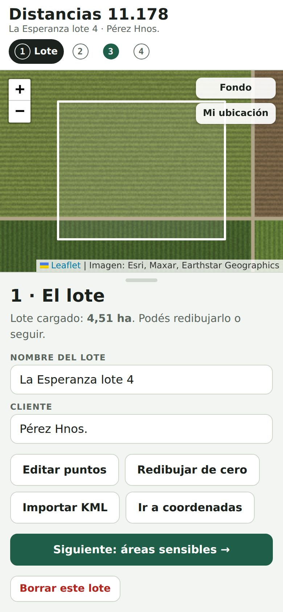
El lote cargado, con sus hectáreas.
Paso 2 de 4
Marcar lo que hay cerca
Marcá todo lo que haya dentro o alrededor del lote, hasta unos 500 metros si aplicás con drone o terrestre, y hasta 3 km si hay una escuela y aplicás con avión.
Tocá la tarjeta de lo que hay: Vivienda, Escuela rural, Curso de agua, Apiario o granja, Área protegida, Sala, club, policía o Pueblo o ciudad.
La app elige sola la forma de marcarlo. Normalmente no hace falta cambiarla.
Tocá el botón verde Marcar … en el mapa.
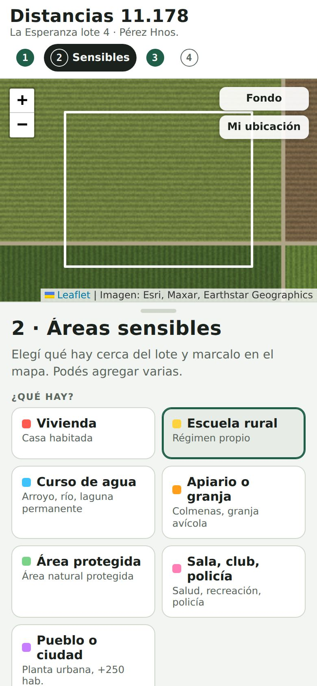
Elegí qué hay cerca.
Forma
Para qué
Cómo se marca
Punto
Casas, escuelas, colmenas, galpones
Un solo toque donde está.
Línea
Arroyos, ríos, cañadas permanentes
Tocás varios puntos a lo largo del cauce y después Terminar.
Perímetro
Pueblos, áreas protegidas, el predio de la escuela
Tocás el contorno como hiciste con el lote y después Terminar.
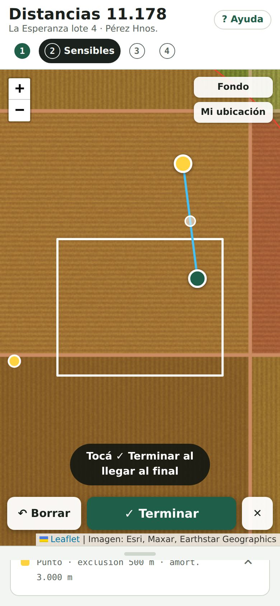
Marcando un arroyo punto por punto.
Marcar un arroyo
Elegí Curso de agua y tocá Marcar curso de agua en el mapa.
Tocá sobre el agua siguiendo el cauce. En las curvas poné más puntos.
Si un punto quedó mal, tocalo para borrarlo o arrastralo. Después tocá Terminar.
Más precisoLa ley mide desde el límite de la casa o la escuela, no desde el centro. Si el predio es grande, marcalo con Perímetro alrededor del alambrado.
Revisar lo marcado
Abajo aparece la lista Marcadas. Podés tocar el nombre y escribir uno propio, por ejemplo "Escuela N° 23". Si algo quedó mal, tocá la ✕ para borrarlo y marcalo de nuevo.
En el mapa ya ves las franjas roja y amarilla alrededor de cada cosa.
Tocá Siguiente: cómo vas a aplicar →.
Si no hay nada cercaTocá No hay áreas sensibles cerca → seguir. Pero mirá bien la imagen: una casa o unas colmenas cambian todo.
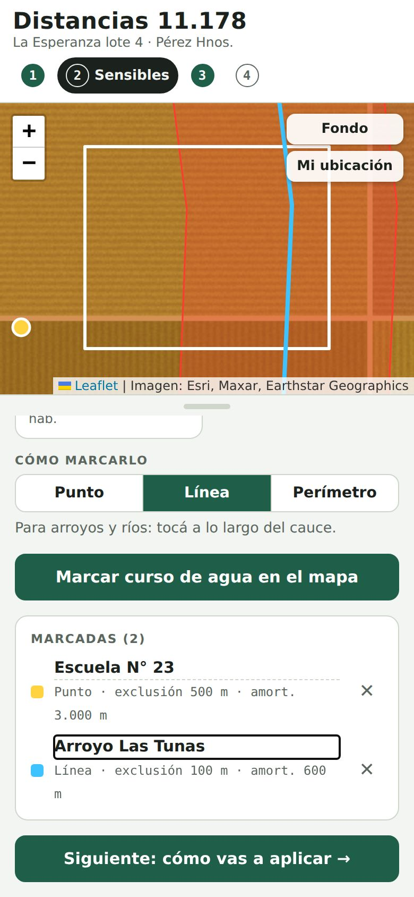
Una escuela y un arroyo marcados.
Paso 3 de 4
Elegir equipo y producto
Tocá el equipo con el que vas a aplicar: drone más de 60 L (T70, T100), drone hasta 60 L (T40, T50), terrestre, manual o avión.
Tocá la clase del producto mirando la banda de color del marbete. Si mezclás varios, elegí el más tóxico (la banda más roja).
Tocá Ver resultado →.
Drones de más de 60 litrosLa ley sólo habla de drones de hasta 60 L. Para los más grandes no hay distancia escrita. La app te pide que elijas con qué compararlo: Avión (lo más seguro, con franjas más grandes) o Terrestre. En el resultado te muestra los dos números. Ante la duda, consultá con el ingeniero.
La app se acuerda del equipo y la clase que usaste la última vez.
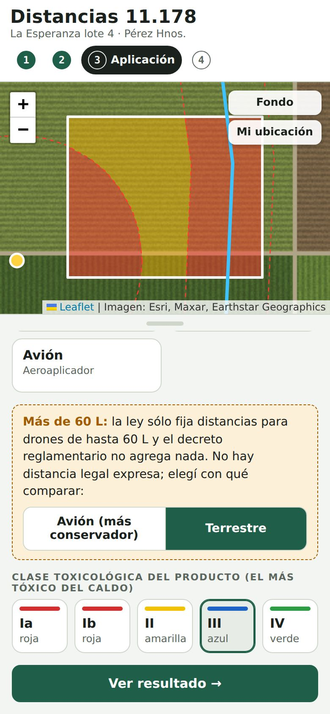
Drone grande comparado con terrestre, producto banda azul.
Paso 4 de 4
Leer el resultado
Arriba, en el recuadro verde, está el número más importante: cuántas hectáreas podés aplicar con ese equipo y ese producto.
En el mapa el lote queda pintado: rojo no se aplica, amarillo sólo banda azul o verde con condiciones, verde se aplica normal.
Si elegiste un drone de más de 60 L, abajo te dice cuánto daría con la otra comparación.
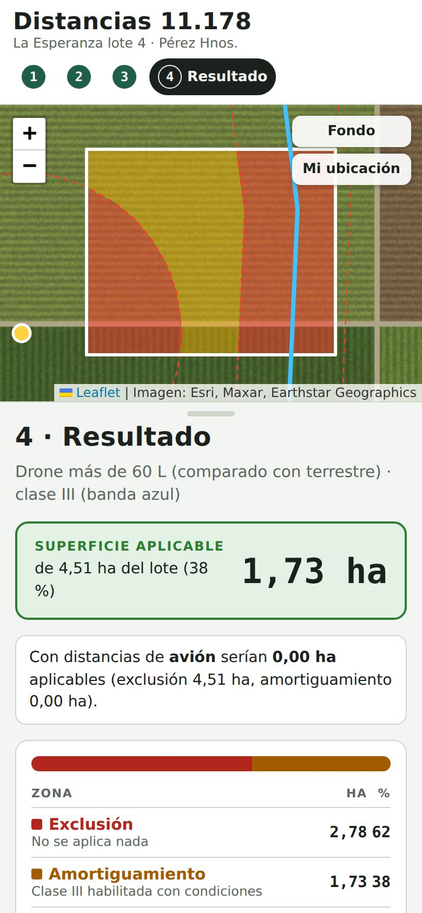
El lote pintado y la superficie aplicable.
Bajando en el resultado vas a ver:
La tabla de zonas: cuántas hectáreas y qué porcentaje del lote queda en cada color.
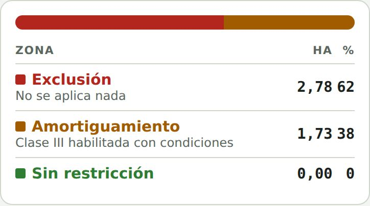
Las franjas por cada cosa marcada: a qué distancia está del lote, de cuántos metros es la franja roja y la amarilla, y cuántas hectáreas le saca al lote. Al lado figura el artículo de la ley.
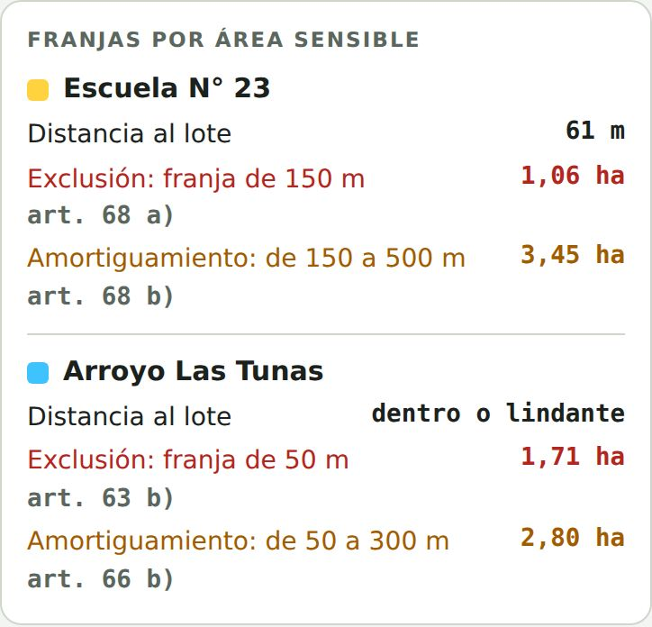
Qué tenés que cumplir: una lista para ir tildando antes de aplicar, por ejemplo receta digital, aviso de 48 horas o ingeniero presente.
ImportanteSi el lote tiene zona amarilla y la vas a aplicar, el ingeniero tiene que estar en el lote y hay que avisar 48 horas antes. Cerca de escuelas, además se avisa a la dirección de la escuela y se aplica fuera del horario de clases, en vacaciones, fines de semana o feriados.
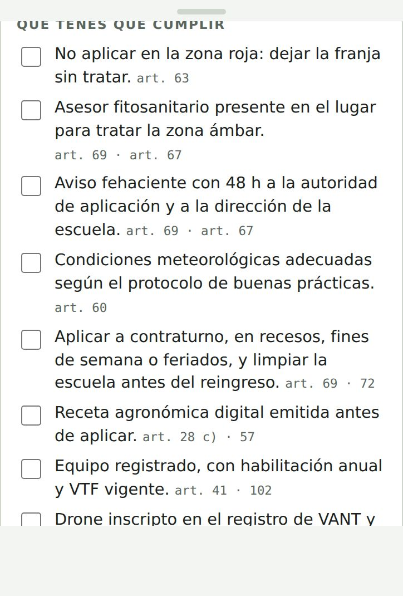
Ya en el lote
Modo campo: ¿puedo aplicar donde estoy?
Abrí el lote y, al final del resultado, tocá Modo campo.
Tocá Usar GPS. El punto negro sos vos.
Arriba del panel te dice en qué zona estás, a cuántos metros de la escuela, casa o arroyo, y si tu producto se puede aplicar ahí.
Sin GPS también funciona: tocá el mapa donde querés saber.
Ojo con la precisiónAbajo dice "GPS ±X m". Si ese número es mayor a 10 y estás cerca del límite entre dos colores, esperá unos segundos quieto hasta que baje.
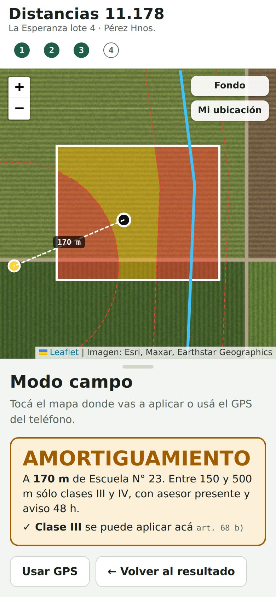
A 170 m de la escuela: zona amarilla, banda azul permitida.
Compartir
Mandar el resultado por WhatsApp y al drone
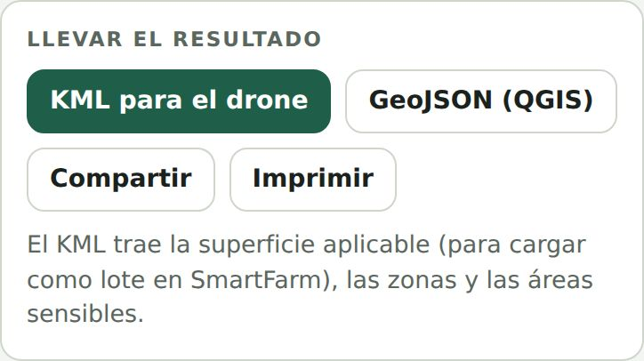
Compartir: abre WhatsApp u otra app con un resumen: lote, hectáreas aplicables, franjas y un link a Google Maps. En la compu lo copia y lo pegás donde quieras.
KML para el drone: baja un archivo con el lote, la superficie aplicable y las zonas. Se abre en Google Earth y se puede subir a DJI SmartFarm para cargar el lote en el control del drone.
GeoJSON (QGIS): el mismo contenido, para quien trabaja con QGIS.
Imprimir: imprime el mapa con el resultado. En el celu podés elegir Guardar como PDF.
Antes de volarRevisá en el control del drone que el lote cargado coincida con el terreno. Si el control no respeta el hueco de una casa o escuela dentro del lote, cargá la zona roja como obstáculo o zona de no aplicación.
Tus lotes
Abrir, cambiar o borrar un lote
Abrir: tocá el título Distancias 11.178 y elegí el lote de la lista. Se abre directo en el resultado.
Cambiar algo: tocá los números de arriba (1, 2, 3, 4) para ir a cualquier paso. Los cambios se guardan solos.
Borrar: en el paso 1 tocá Borrar este lote dos veces seguidas.
Dónde se guardanLos lotes quedan guardados sólo en ese teléfono o esa compu. Si cambiás de celular, o si otra persona quiere ver el mismo lote, exportá el KML y del otro lado usá Importar KML.
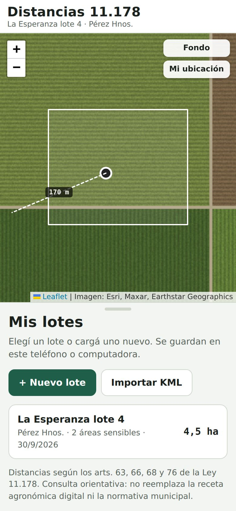
El lote queda guardado en la lista.
Ayuda
Si algo no anda
No veo la imagen satelital, está todo negro o gris
Falta señal o el zoom es muy grande. Alejá un poco con dos dedos. Si seguís sin ver nada, tocá Fondo (arriba a la derecha del mapa) para pasar al mapa de calles, que pesa menos.
Toqué mal una esquina del lote
Mientras estás dibujando, tocá el punto que está mal y se borra, o arrastralo a su lugar. Si ya terminaste, en el paso 1 tocá Editar puntos.
Marqué algo en el lugar equivocado
En el paso 2, en la lista Marcadas, tocá la ✕ al lado y marcalo de nuevo.
El GPS no anda o no me encuentra
Revisá que la ubicación del teléfono esté prendida. Si antes tocaste "No permitir", andá a la configuración del navegador → Permisos del sitio → Ubicación, y permitila para esta app. Afuera, con cielo abierto, el GPS anda mejor que adentro de la camioneta.
Los números no me cambian cuando elijo otro producto
Si el lote no tiene zona amarilla, el producto no cambia nada: la zona roja no se aplica con ningún producto y la verde se aplica con todos. Cambia sólo cuando hay zona amarilla.
Todo el lote me sale rojo
Seguramente hay una escuela cerca y elegiste Avión o Drone más de 60 L comparado con avión: con avión, la franja roja de una escuela es de 500 metros. Revisá el equipo en el paso 3.
Me sigue mostrando una versión vieja de la app
Cerrá la app del todo (sacala de las apps abiertas) y abrila de nuevo. En la compu, apretá Ctrl + F5.
Borré el lote sin querer
No se puede recuperar. Por eso conviene exportar el KML de los lotes importantes y guardarlo.
Para consultar
Tabla de distancias de la ley
En metros, medidos desde el límite de la casa, escuela, arroyo o pueblo. Rojo: exclusión hasta. Amarillo: amortiguamiento hasta.
Qué hay cerca
Manual o drone hasta 60 L
Terrestre
Avión
Vivienda, sala, club, policía
10 / 30
100 / 300
200 / 600
Curso de agua, apiario, granja, área protegida
5 / 30
50 / 300
100 / 600
Escuela rural
15 / 45
150 / 500
500 / 3.000
Pueblo o ciudad
10 / 30
100 / 300
1.000 / 3.000
Artículos 63, 66, 68 y 76 de la Ley 11.178 de Entre Ríos. Para pueblos, la ley fija distancias propias sólo para avión; para los demás equipos la app usa las de vivienda. Los drones de más de 60 L no tienen distancia escrita en la ley.
Esta app es una ayuda para planificar. No reemplaza la receta agronómica digital, el criterio del ingeniero agrónomo ni las ordenanzas del municipio, que pueden pedir distancias mayores.